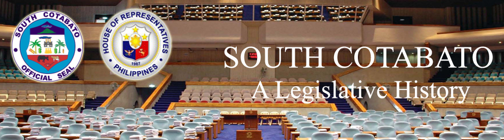

| History |
| Legislators |
| Laws |
| About |
 |
| LAWS ON SOUTH COTABATO |
| LAWS ON SOUTH COTABATO | DATE OF APPROVAL | TITLE | SOURCE | SUBJECT | |
| 1 | REPUBLIC ACT 59 | 10/17/1946 | AN ACT TO MAKE ELECTIVE THE OFFICES OF PROVINCIAL GOVERNOR AND MEMBERS OF THE PROVINCIAL BOARD, AND TO FIX THE COMPENSATION OF THE PROVINCIAL OFFICIALS, OF BUKIDNON, COTABATO, LANAO, SULU AND MOUNTAIN PROVINCE | PUBLIC OFFICES; SALARIES AND WAGES | |
| 2 | COMMONWEALTH ACT 44 | AN ACT APPLYING THE GENERAL PROVISIONS OF THE ELECTION LAW TO THE ELECTION OF ASSEMBLYMEN FROM THE PROVINCES OF LANAO, COTABATO, AND SULU | Official Gazette vol. 34 no. 155 page 2587 (12-26-36) | ELECTION LAW | |
| 3 | REPUBLIC ACT 1034 | 6/12/1954 | AN ACT CHANGING THE NAME OF BARRIO OF BANAWA, IN THE MUNICIPALITY OF KABAGAN, PROVINCE OF COTABATO, TO BANAWAG | Official Gazette vol. 50 no. 6 page 2389 (6/00/1954) | MUNICIPALITIES |
| 4 | REPUBLIC ACT 1035 | 6/12/1954 | AN ACT CHANGING THE NAME OF THE MUNICIPALITY OF DULAWAN IN THE PROVINCE OF COTABATO TO DATU PIANG | Official Gazette vol. 50 no. 6 page 2389 (6/00/1954) | MUNICIPALITIES |
| 5 | REPUBLIC ACT 1107 | 6/15/1954 | AN ACT CHANGING THE NAME OF THE MUNICIPALITY OF BUAYAN, IN THE PROVINCE OF COTABATO, TO GENERAL SANTOS | Official Gazette vol. 50 no. 8 page 3445 (6/00/1954) | MUNICIPALITIES |
| 6 | REPUBLIC ACT 1248 | 6/10/1955 | AN ACT TO CREATE THE MUNICIPALITY OF UPI IN THE PROVINCE OF COTABATO | Official Gazette vol. 51 no. 6 page 2815 (6/00/1955) | MUNICIPALITIES |
| 7 | REPUBLIC ACT 2189 | 5/07/1959 | AN ACT CREATING THE MUNICIPALITY OF MAITUM, PROVINCE OF COTABATO | Official Gazette vol. 55 no. 25 page 4618 (6/22/1959) | MUNICIPALITIES |
| 8 | REPUBLIC ACT 2509 | 6/21/1959 | AN ACT CREATING THE MUNICIPALITY OF AMPATUAN, PROVINCE OF COTABATO | Official Gazette vol. 55 no. 37 page 7888 (9/14/1959) | MUNICIPALITIES |
| 9 | REPUBLIC ACT 2587 | 6/21/1959 | AN ACT CHANGING THE NAME OF THE MUNICIPALITY OF LAMBAYONG, PROVINCE OF COTABATO, TO SULTAN SA BARONGIS | Official Gazette vol. 55 no. 40 page 8440 (10/05/1959) | MUNICIPALITIES |
| 10 | REPUBLIC ACT 2835 | 6/19/1960 | AN ACT CREATING CERTAIN BARRIOS IN THE MUNICIPALITY OF MIDSAYAP, PROVINCE OF COTABATO | Official Gazette vol. 57 no. 9 page 1558 (10/05/1959) | BARRIOS |
| 11 | REPUBLIC ACT 3357 | 6/18/1961 | AN ACT CREATING CERTAIN BARRIOS IN THE MUNICIPALITY OF NULING, PROVINCE OF COTABATO | Official Gazette vol. 58 no. 23 page 4370 (6/04/1962) | BARRIOS |
| 12 | REPUBLIC ACT 3419 | 6/18/1961 | AN ACT CREATING THE MUNICIPALITY OF BULDON, PROVINCE OF COTABATO | Official Gazette vol. 58 no. 27 page 4829 (7/02/1962) | MUNICIPALITIES |
| 13 | REPUBLIC ACT 3420 | 6/18/1961 | AN ACT CREATING THE MUNICIPALITY OF SURALLAH IN THE PROVINCE OF COTABATO | Official Gazette vol. 58 no. 27 page 4830 (7/02/1962) | MUNICIPALITIES |
| 14 | REPUBLIC ACT 3664 | 6/22/1963 | AN ACT TO AMEND REPUBLIC ACT NUMBERED THIRTY-FOUR HUNDRED TWENTY, ENTITLED "AN ACT CREATING THE MUNICIPALITY OF SURALLAH IN THE PROVINCE OF COTABATO" | Official Gazette vol. 59 no. 41 page 7034 (6/22/1963) | AMENDMENTS; MUNICIPALITIES |
| 15 | REPUBLIC ACT 3721 | 6/22/1963 | AN ACT CREATING THE MUNICIPALITY OF MAGPET IN THE PROVINCE OF COTABATO | Official Gazette vol. 59 no. 48 page 8213 (6/22/1963) | MUNICIPALITIES |
| 16 | REPUBLIC ACT 4868 | 5/08/1967 | AN ACT CREATING THE MUNICIPALITY OF LUTAYAN, PROVINCE OF COTABATO | Official Gazette vol. 65 no. 6 page 1261 (2/10/1969) | MUNICIPALITIES |
| 17 | REPUBLIC ACT 4869 | 5/08/1967 | AN ACT CREATING THE MUNICIPALITY OF PRESIDENT ROXAS IN THE PROVINCE OF COTABATO | Official Gazette vol. 65 no. 6 page 1261 (2/10/1969) | MUNICIPALITIES |
| 18 | REPUBLIC ACT 5378 | 6/15/1968 | AN ACT CREATING FOUR POSITIONS OF ASSISTANT PROVINCIAL FISCAL IN THE PROVINCE OF SOUTH COTABATO, AMENDING FOR THE PURPOSE SECTION SIXTEEN HUNDRED SEVENTY-FOUR OF THE ADMINISTRATIVE CODE, AS AMENDED | Official Gazette vol. 65 no. 25 page 6388 (6/23/1969) | FISCALS |
| 19 | REPUBLIC ACT 5379 | 6/15/1968 | AN ACT PROVIDING FOR THE ESTABLISHMENT OF A VOCATIONAL HIGH SCHOOL IN THE MUNICIPALITY OF GLAN, PROVINCE OF SOUTH COTABATO, TO BE KNOWN AS GLAN VOCATIONAL HIGH SCHOOL AND AUTHORIZING THE APPROPRIATION OF FUNDS THEREFOR | Official Gazette vol. 65 no. 25 page 6389 (6/23/1969) | SCHOOLS |
| 20 | REPUBLIC ACT 5382 | 6/15/1968 | AN ACT PROVIDING FOR ONE ADDITIONAL JUDGE FOR THE SIXTEENTH JUDICIAL DISTRICT TO PRESIDE OVER THE COURT OF FIRST INSTANCE OF SOUTH COTABATO WITH PERMANENT STATION IN THE MUNICIPALITY OF OF KORONADAL, PROVINCE OF SOUTH COTABATO, AMENDING FOR THE PURPOSE SECTIONS FORTY-NINE, FIFTY AND FIFTY-TWO OF THE JUDICIARY ACT OF 1948 | Official Gazette vol. 65 no. 26 page 6569 (6/30/1969) | PUBLIC OFFICERS |
| 21 | REPUBLIC ACT 5391 | 6/15/1968 | AN ACT PROVIDING FOR THE ESTABLISHMENT OF A CHEST CLINIC IN THE MUNICIPALITY OF GENERAL SANTOS, PROVINCE OF SOUTH COTABATO, AND AUTHORIZING THE APPROPRIATION OF FUNDS THEREFOR | Official Gazette vol. 65 no. 26 page 6575 (6/30/1969) | HEALTH CENTERS |
| 22 | REPUBLIC ACT 5397 | 6/15/1968 | AN ACT PROVIDING FOR THE ESTABLISHMENT OF A HOSPITAL IN THE MUNICIPALITY OF SURALA, PROVINCE OF SOUTH COTABATO, TO BE KNOWN AS SURALA GENERAL HOSPITAL, AND AUTHORIZING THE APPROPRIATION OF FUNDS THEREFOR | Official Gazette vol. 65 no. 26 page 6579 (6/30/1969) | HOSPITALS |
| 23 | REPUBLIC ACT 5425 | 6/15/1968 | AN ACT MAKING THE SUBPORT OF DADIANGAS IN THE MUNICIPALITY OF GENERAL SANTOS, PROVINCE OF SOUTH COTABATO, A PORT OF ENTRY BY AMENDING SECTION SEVEN HUNDRED ONE OF THE TARIFF AND CUSTOMS CODE OF THE PHILIPPINES, AND AUTHORIZING THE APPROPRIATION OF FUNDS THEREFOR | Official Gazette vol. 65 no. 28 page 7102 (7/14/1969) | PORTS OF ENTRY |
| 24 | REPUBLIC ACT 5522 | 6/21/1969 | AN ACT CREATING THE MUNICIPALITY OF MALUNGON IN THE PROVINCE OF SOUTH COTABATO | Official Gazette vol. 65 no. 46 page 12684 (11/17/1969) | MUNICIPALITIES |
| 25 | REPUBLIC ACT 5550 | 6/21/1969 | AN ACT CONVERTING KORONADAL PROVINCIAL HIGH SCHOOL IN THE MUNICIPALITY OF KORONADAL, PROVINCE OF SOUTH COTABATO, INTO A NATIONAL HIGH SCHOOL TO BE KNOWN AS KORONADAL NATIONAL COMPREHENSIVE HIGH SCHOOL, AND AUTHORIZING THE APPROPRIATION of funds therefor | Official Gazette vol. 65 no. 47 page 13007 (11/24/1969) | SCHOOLS |
| 26 | REPUBLIC ACT 5645 | 6/21/1969 | AN ACT CREATING THE MUNICIPALITY OF ALAMADA IN THE PROVINCE OF COTABATO | Official Gazette vol. 65 no. 49 page 13562 (12/08/1969) | MUNICIPALITIES |
| 27 | REPUBLIC ACT 5657 | 6/21/1969 | AN ACT CONVERTING THE RURAL HEALTH CENTER IN THE MUNICIPALITY OF KORONADAL, PROVINCE OF SOUTH COTABATO, INTO A GENERAL HOSPITAL, TO BE KNOWN AS KORONADAL GENERAL HOSPITAL AND AUTHORIZING THE APPROPRIATION OF FUNDS THEREFOR | Official Gazette vol. 65 no. 50 page 13814 (12/15/1969) | HEALTH CENTERS |
| 28 | REPUBLIC ACT 5661 | 6/21/1969 | AN ACT CREATING THE MUNICIPALITY OF TAMPAKAN IN THE PROVINCE OF SOUTH COTABATO | Official Gazette vol. 65 no. 50 page 13815 (12/15/1969) | MUNICIPALITIES |
| 29 | REPUBLIC ACT 5704 | 6/21/1969 | AN ACT ESTABLISHING A NATIONAL AGRICULTURAL HIGH SCHOOL IN THE MUNICIPALITY OF SURALLAH, PROVINCE OF SOUTH COTABATO AND AUTHORIZING THE APPROPRIATION OF FUNDS THEREFOR | Official Gazette vol. 65 no. 52 page 14375 (12/22/1969) | SCHOOLS |
| 30 | REPUBLIC ACT 5757 | 6/21/1969 | AN ACT ESTABLISHING A NATIONAL SCHOOL OF FISHERIES IN THE MUNICIPALITY OF GLAN, PROVINCE OF SOUTH COTABATO, TO BE KNOWN AS THE GLAN NATIONAL SCHOOL OF FISHERIES AND AUTHORIZING THE APPROPRIATION OF FUNDS THEREFOR | Official Gazette vol. 66 no. 2 page 256 (1/12/1970) | SCHOOLS |
| 31 | REPUBLIC ACT 5823 | 6/21/1969 | AN ACT CREATING THE MUNICIPALITY OF MALAPATAN IN THE PROVINCE OF SOUTH COTABATO | Official Gazette vol. 66 no. 5 page 987 (2/2/1970) | MUNICIPALITIES |
| 32 | REPUBLIC ACT 5826 | 6/21/1969 | AN ACT ESTABLISHING A GENERAL HOSPITAL IN THE MUNICIPALITY OF TUPI, PROVINCE OF SOUTH COTABATO, TO BE KNOWN AS SOUTH COTABATO GENERAL HOSPITAL, AND AUTHORIZING THE APPROPRIATION OF FUNDS THEREFOR | Official Gazette vol. 66 no. 6 page 1249 (2/2/1970) | HOSPITALS |
| 33 | REPUBLIC ACT 5836 | 6/21/1969 | AN ACT PROVIDING FOR THE ESTABLISHMENT OF AN EMERGENCY HOSPITAL IN THE MUNICIPALITY OF NORALA, PROVINCE OF SOUTH COTABATO, AND AUTHORIZING THE APPROPRIATION OF FUNDS THEREFOR | Official Gazette vol. 66 no. 6 page 1265 (2/9/1970) | HOSPITALS |
| 34 | REPUBLIC ACT 5866 | 6/21/1969 | AN ACT CREATING THE MUNICIPALITY OF MAASIM IN THE PROVINCE OF SOUTH COTABATO | Official Gazette vol. 66 no. 7 page 1542 (2/16/1970) | MUNICIPALITIES |
| 35 | REPUBLIC ACT 5958 | 6/21/1969 | AN ACT GRANTING BIDCOR TELEPHONE COMPANY, INC. A FRANCHISE TO INSTALL, OPERATE AND MAINTAIN A TELEPHONE SYSTEM IN THE PROVINCE OF SOUTH COTABATO | Official Gazette vol. 66 no. 12 page 2798 (3/23/1970) | FRANCHISES |
| 36 | REPUBLIC ACT 5960 | 6/21/1969 | AN ACT RECREATING THE MUNICIPALITY OF BAGUMBAYAN IN THE PROVINCE OF COTABATO | Official Gazette vol. 66 no. 12 page 2805 (3/23/1970) | MUNICIPALITIES |
| 37 | REPUBLIC ACT 6095 | 8/4/1969 | AN ACT ESTABLISHING A BREEDING STATION AND STOCK FARM IN THE MUNICIPALITY OF TUPI, PROVINCE OF SOUTH COTABATO, AND AUTHORIZING THE APPROPRIATION OF THE NECESSARY FUNDS THEREFOR | Official Gazette vol. 66 no. 17 page 4257 (4/27/1970) | BREEDING STATIONS |
| 38 | REPUBLIC ACT 6356 | 6/19/1971 | AN ACT CONVERTING KLING BARRIO HIGH SCHOOL IN THE MUNICIPALITY OF KIAMBA, PROVINCE OF SOUTH COTABATO, INTO A NATIONAL HIGH SCHOOL TO BE KNOWN AS KLING NATIONAL HIGH SCHOOL, AND AUTHORIZING THE APPROPRIATION OF FUNDS THEREFOR | Official Gazette vol. 68 no. 1 page 3 (1/03/1972) | SCHOOLS |
| 39 | BATAS PAMBANSA 90 | 12/23/1980 | AN ACT CREATING THE MUNICIPALITY OF STO. NINO IN THE PROVINCE OF SOUTH COTABATO | Official Gazette vol. 77 no. 15 page 1851 (4/13/1981) | MUNICIPALITIES |
| 40 | BATAS PAMBANSA 438 | AN ACT ESTABLISHING A TEN-BED MUNICIPAL HOSPITAL IN THE MUNICIPALITY OF MAITUM, PROVINCE OF SOUTH COTABATO, TO BE KNOWN AS MAITUM MUNICIPAL HOSPITAL, AND APPROPRIATING FUNDS THEREFOR | Official Gazette vol. 80 no. 14 page 2071 (4/02/1984) | HOSPITALS | |
| 41 | BATAS PAMBANSA 439 | 6/10/1983 | AN ACT ESTABLISHING A TEN-BED MUNICIPAL HOSPITAL IN THE MUNICIPALITY OF MALUNGON, PROVINCE OF SOUTH COTABATO, TO BE KNOWN AS MALUNGON MUNICIPAL HOSPITAL, AND APPROPRIATING FUNDS THEREFOR | Official Gazette vol. 80 no. 14 page 2071 (4/02/1984) | HOSPITALS |
| 42 | BATAS PAMBANSA 472 | 6/10/1983 | AN ACT CREATING A SECONDARY VOCATIONAL SCHOOL IN THE MUNICIPALITY OF STO. NIÑO, PROVINCE OF SOUTH COTABATO,TO BE KNOWN AS THE STO. NIO NATIONAL SCHOOL OF ARTS AND TRADES AND PROVIDING FUNDS THEREFOR | Official Gazette vol. 80 no. 15, page 2231 (4/09/1984) | SCHOOLS |
| 43 | BATAS PAMBANSA 571 | 6/24/1983 | AN ACT INCREASING THE BED CAPACITY OF THE GENERAL SANTOS EMERGENCY HOSPITAL FROM SEVENTY-FIVE TO ONE HUNDRED BEDS | Official Gazette vol. 80 no. 18, page 2610 (4/30/1984) | HOSPITALS |
| 44 | BATAS PAMBANSA 583 | 6/24/1983 | AN ACT CONVERTING THE LAMIAN BARANGAY HIGH SCHOOL IN THE MUNICIPALITY OF SURRALAH, PROVINCE OF SOUTH COTABATO, INTO A NATIONAL HIGH SCHOOL TO BE KNOWN AS THE LAMIAN NATIONAL HIGH SCHOOL, AND APPROPRIATING FUNDS THEREFOR | Official Gazette vol. 80 no. 19, page 2764 (5/07/1984) | SCHOOLS |
| 45 | BATAS PAMBANSA 584 | 6/24/1983 | AN ACT CONVERTING THE LIBERTAD BARANGAY HIGH SCHOOL IN THE MUNICIPALITY OF SURRALAH, PROVINCE OF SOUTH COTABATO, INTO A NATIONAL HIGH SCHOOL TO BE KNOWN AS THE LIBERTAD NATIONAL HIGH SCHOOL, AND APPROPRIATING FUNDS THEREFOR | Official Gazette vol. 80 no. 19, page 2764 (5/07/1984) | SCHOOLS |
| 46 | BATAS PAMBANSA 612 | 6/24/1983 | AN ACT CONVERTING THE GENERAL SANTOS NATIONAL TRADE SCHOOL IN THE CITY OF GENERAL SANTOS, INTO A NATIONAL SCHOOL OF ARTS AND TRADES TO BE KNOWN AS THE GENERAL SANTOS NATIONAL SCHOOL OF ARTS AND TRADES, AND APPROPRIATING FUNDS THEREFOR | Official Gazette vol. 80 no. 20, page 2890 (5/14/1984) | SCHOOLS |
| 47 | BATAS PAMBANSA 613 | 6/24/1983 | AN ACT CONVERTING THE BULA BARANGAY HIGH SCHOOL IN THE CITY OF GENERAL SANTOS INTO A NATIONAL SECONDARY SCHOOL OF FISHERIES TO BE KNOWN AS THE BULA NATIONAL SCHOOL OF FISHERIES AND APPROPRIATING FUNDS THEREFOR | Official Gazette vol. 80 no. 20, page 2891 (5/14/1984) | SCHOOLS |
| 48 | BATAS PAMBANSA 781 | 4/13/1984 | AN ACT CHANGING THE NAME OF THE GIAN VOCATIONAL HIGH SCHOOL IN THE MUNICIPALITY OF GLAN, PROVINCE OF SOUTH COTABATO, TO GLAN SCHOOL OF ARTS AND TRADES | Official Gazette vol. 81 no. 13 page 1299 (4/01/1985) | SCHOOLS |
| 49 | REPUBLIC ACT 6776 | 11/29/1989 | AN ACT CHANGING THE NAME OF THE TABUDTOD ELEMENTARY SCHOOL IN THE MUNICIPALITY OF KIAMBA, PROVINCE OF SOUTH COTABATO, TO JUDGE BALTAZAR T. CAING, SR. MEMORIAL ELEMENTARY SCHOOL | Official Gazette vol. 85 no. 51 page 60 (12/18/1989) | SCHOOLS |
| 50 | REPUBLIC ACT 6824 | 12/18/1989 | AN ACT CHANGING THE NAME OF THE BUAYAN ELEMENTARY SCHOOL TO DATU ACAD DALID CENTRAL ELEMENTARY SCHOOL | Official Gazette vol. 86 no. 8 page 1443 (2/19/1990) | SCHOOLS |
| 51 | REPUBLIC ACT 6873 | 3/8/1990 | AN ACT ESTABLISHING A TEN-BED MUNICIPAL HOSPITAL IN THE MUNICIPALITY OF LAKE SEBU, PROVINCE OF SOUTH COTABATO, TO BE KNOWN AS THE LAKE SEBU MUNICIPAL HOSPITAL, AND APPROPRIATING FUNDS THEREFOR | Official Gazette vol. 86 no. 22 page 3808 (5/28/1990) | HOSPITALS |
| 52 | REPUBLIC ACT 6914 | 3/9/1990 | AN ACT ESTABLISHING A TEN-BED MUNICIPAL HOSPITAL IN THE MUNICIPALITY OF MAASIM, PROVINCE OF SOUTH COTABATO, TO BE KNOWN AS THE MAASIM MUNICIPAL HOSPITAL, AND APPROPRIATING FUNDS THEREFOR | Official Gazette vol. 86 no. 26 page 4656 (6/25/1990) | HOSPITALS |
| 53 | REPUBLIC ACT 6934 | 3/9/1990 | AN ACT ESTABLISHING A TEN-BED MUNICIPAL HOSPITAL IN THE MUNICIPALITY OF POLOMOLOK, PROVINCE OF SOUTH COTABATO, TO BE KNOWN AS THE POLOMOLOK MUNICIPAL HOSPITAL, AND APPROPRIATING FUNDS THEREFOR | HOSPITALS | |
| 54 | REPUBLIC ACT 6990 | 5/6/1991 | AN ACT ESTABLISHING A HIGH SCHOOL IN THE MUNICIPALITY OF TANTANGAN, PROVINCE OF SOUTH COTABATO, TO BE KNOWN AS THE TANTANGAN HIGH SCHOOL, AND APPROPRIATING FUNDS THEREFOR | Official Gazette vol. 87 no. 25 page 3450 (6/24/1991) | SCHOOLS |
| 55 | REPUBLIC ACT 6991 | 5/6/1991 | AN ACT ESTABLISHING A HIGH SCHOOL IN THE MUNICIPALITY OF BANGA, PROVINCE OF SOUTH COTABATO, TO BE KNOWN AS THE BANGA HIGH SCHOOL, AND APPROPRIATING FUNDS THEREFOR | Official Gazette vol. 87 no. 25 page 3450 (6/24/1991) | SCHOOLS |
| 56 | REPUBLIC ACT 7063 | 6/21/1991 | AN ACT ESTABLISHING A HIGH SCHOOL IN THE MUNICIPALITY OF KIAMBA, PROVINCE OF SOUTH COTABATO, TO BE KNOWN AS THE KIAMBA PUBLIC HIGH SCHOOL, AND APPROPRIATING FUNDS THEREFOR | Official Gazette vol. 87 no. 35 page 5026 (9/2/1991) | SCHOOLS |
| 57 | REPUBLIC ACT 7188 | 1/30/1992 | AN ACT INCREASING THE BED CAPACITY OF THE NORALA DISTRICT HOSPITAL IN THE PROVINCE OF SOUTH COTABATO FROM TWENTY-FIVE (25) TO FIFTY (50) BEDS, AND APPROPRIATING FUNDS THEREFOR | Official Gazette vol. 88 no.10 page 1294 (3/09/1992) | HOSPITALS |
| 58 | REPUBLIC ACT 7286 | 3/24/1992 | AN ACT INCREASING THE BED CAPACITY OF THE PROVINCIAL HOSPITAL OF SOUTH COTABATO FROM ONE HUNDRED (100) TO ONE HUNDRED TWENTY-FIVE (125) BEDS, AND APPROPRIATING FUNDS THEREFOR | Official Gazette vol. 88 no.19 page 2724 (5/11/1992) | HOSPITALS |
| 59 | REPUBLIC ACT 9767 | 11/10/2009 | AN ACT SEPARATING THE TUPI NATIONAL HIGH SCHOOL - CEBUANO ANNEX IN BARANGAY CEBUANO, MUNICIPALITY OF TUPI, PROVINCE OF SOUTH COTABATO FROM THE TUPI NATIONAL HIGH SCHOOL, CONVERTING IT INTO AN INDEPENDENT NATIONAL HIGH SCHOOL TO BE KNOWN AS CEBUANO NATIONAL HIGH SCHOOL AND APPROPRIATING FUNDS THEREFOR | Official Gazette vol. 106 no. 6 page 739 (2/08/2010) | SCHOOLS |
| 60 | REPUBLIC ACT 9807 | 11/26/2009 | AN ACT SEPARATING THE LAKE SEBU NATIONAL HIGH SCHOOL - NED ANNEX IN BARANGAY NED, MUNICIPALITY OF LAKE SEBU, PROVINCE OF SOUTH COTABATO FROM THE LAKE SEBU NATIONAL HIGH SCHOOL, CONVERTING IT INTO AN INDEPENDENT NATIONAL HIGH SCHOOL TO BE KNOWN AS NED NATIONAL HIGH SCHOOL AND APPROPRIATING FUNDS THEREFOR | Official Gazette vol. 106 no.7 page 891 (2/15/2010) | SCHOOLS |
| 61 | REPUBLIC ACT 9808 | 11/26/2009 | AN ACT SEPARATING THE T'BOLI NATIONAL HIGH SCHOOL - NEW DUMANGAS ANNEX IN BARANGAY NEW DUMANGAS, MUNICIPALITY OF T'BOLI, PROVINCE OF SOUTH COTABATO FROM THE T'BOLI NATIONAL HIGH SCHOOL, CONVERTING IT INTO AN INDEPENDENT NATIONAL HIGH SCHOOL TO BE KNOWN AS NEW DUMANGAS NATIONAL HIGH SCHOOL AND APPROPRIATING FUNDS THEREFOR | Official Gazette vol. 106 no.7 page 892 (2/15/2010) | SCHOOLS |
| 62 | REPUBLIC ACT 9813 | 11/26/2009 | AN ACT SEPARATING THE LAMIAN NATIONAL HIGH SCHOOL - LAMBONTONG CAMPUS IN BARANGAY LAMBONTONG, MUNICIPALITY OF SURALLAH, PROVINCE OF SOUTH COTABATO FROM THE LAMIAN NATIONAL HIGH SCHOOL, CONVERTING IT INTO AN INDEPENDENT NATIONAL HIGH SCHOOL TO BE KNOWN AS LAMBONTONG NATIONAL HIGH SCHOOL AND APPROPRIATING FUNDS THEREFOR | Official Gazette vol. 106 no.7 page 894 (2/15/2010) | SCHOOLS |
| 63 | REPUBLIC ACT 9818 | 11/26/2009 | AN ACT SEPARATING THE TANTANGAN NATIONAL HIGH SCHOOL - BUCAY PAIT ANNEX IN BARANGAY BUCAY PAIT, MUNICIPALITY OF TANTANGAN, PROVINCE OF SOUTH COTABATO FROM THE TANTANGAN NATIONAL HIGH SCHOOL, CONVERTING IT INTO AN INDEPENDENT NATIONAL HIGH SCHOOL TO BE KNOWN AS BUCAY PAIT NATIONAL HIGH SCHOOL AND APPROPRIATING FUNDS THEREFOR | Official Gazette vol. 106 no.7 page 897 (2/15/2010) | SCHOOLS |
| 64 | REPUBLIC ACT 9906 | 1/7/2010 | AN ACT CREATING FOUR ADDITIONAL BRANCHES OF THE REGIONAL TRIAL COURT IN THE ELEVENTH JUDICIAL REGIONTO BE STATIONED AT THE KORONADAL CITY AND AT THE MUNICIPALITY OFSURALLAH, ALL IN THE PROVINCE OFSOUTH COTABATO, AMENDING FOR THE PURPOSE SECTION14, PARAGRAPH (L) OF BATAS PAMBANSA BLG. 129, OTHERWISE KNOWN AS "THE JUDICIARY REORGANIZATION ACT OF 1980", AS AMENDED, AND APPROPRIATING FUNDS THEREFOR | Official Gazette Vol. 106 no.12 page 1536 | TRIAl COURTS, REGIONAL |
| 65 | REPUBLIC ACT 9926 | 1/7/2010 | AN ACT SEPARATING THE BANGA NATIONAL HIGH SCHOOL - SAN JOSE ANNEX IN BARANGAY SAN JOSE, MUNICIPALITY OF BANGA, PROVINCE OF SOUTH COTABATO FROM THE BANGA NATIONAL HIGH SCHOOL, CONVERTING IT INTO AN INDEPENDENT NATIONAL HIGH SCHOOL TO BE KNOWN AS SAN JOSE NATIONAL HIGN SCHOOL AND APPROPRIATING FUNDS THEREFOR | Official Gazette Vol. 106 no.12 page 1546 | SCHOOLS |
| 66 | REPUBLIC ACT 10177 | 9/14/2012 | AN ACT REAPPORTIONING THE PROVINCE OF COTABATO INTO THREE (3) LEGISLATIVE DISTRICTS | LEGISLATIVE DISTRICTS |
|
| 67 | REPUBLIC ACT 10196 | 10/18/2012 | AN ACT SEPARATING THE ESPERANZA NATIONAL HIGH SCHOOL-ROTONDA ANNEX IN BARANGAY ROTONDA, CITY OF KORONADAL, PROVINCE OF SOUTH COTABATO FROM THE ESPERANZA NATIONAL HIGH SCHOOL, CONVERTING IT INTO AN INDEPENDENT NATIONAL HIGH SCHOOL TO BE KNOWN AS ROTONDA NATIONAL HIGH SCHOOL AND APPROPRIATING FUNDS THEREFOR. |
SCHOOLS | |
| 68 | REPUBLIC ACT 10272 | 11/15/2012 | AN ACT SEPARATING THE LAMIAN NATIONAL HIGH SCHOOL – LAMSUGOD ANNEX IN BARANGAY LAMSUGOD, MUNICIPALITY OF SURALLAH, PROVINCE OF SOUTH COTABATO FROM THE LAMIAN NATIONAL HIGH SCHOOL, CONVERTING IT INTO AN INDEPENDENT NATIONAL HIGH SCHOOL TO BE KNOWN AS LAMSUGOD NATIONAL HIGH SCHOOL AND APPROPRIATING FUNDS THEREFOR |
SCHOOLS |

Congressional Library Bureau
Legislative Library Service